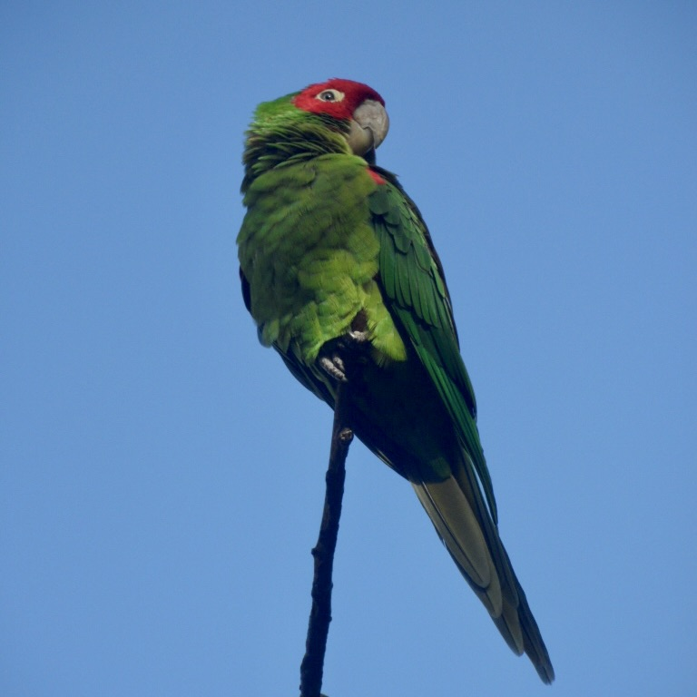
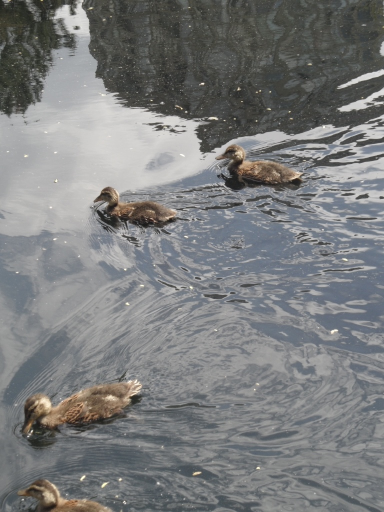
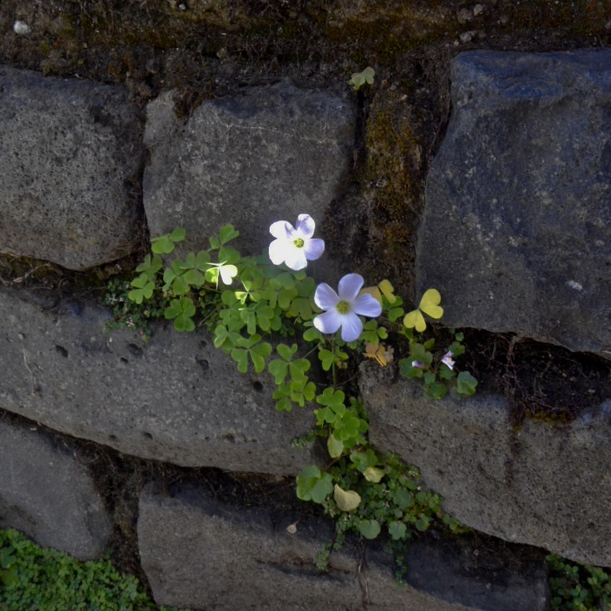
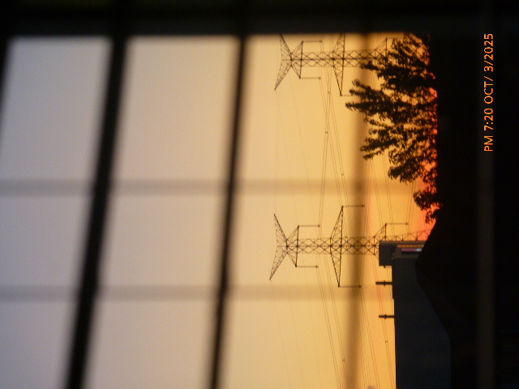

I am currently a student at the University of Toronto Mississauga, pursuing a double major in Communication, Culture, Information & Technology (CCIT) and Technology, Coding & Society (TCS).
Through my studies, I have come to understand how technology, media, and society relate to one another. At the same time, I have developed important skills in web design and media production.
Besides my program, I have also taken various courses in subjects such as astronomy, mathematics, and philosophy, which I found particularly fascinating.
Outside of academics, I enjoy playing the piano, photography, ballet, and pursuing my various interests in astronomy and physics.
As I continue my studies, I hope to expand this portfolio, explore new areas, and further develop my skills and interests.
Feel free to explore my website to view my work, resume, and the creative process of this website, or to connect with me through my contact information!



